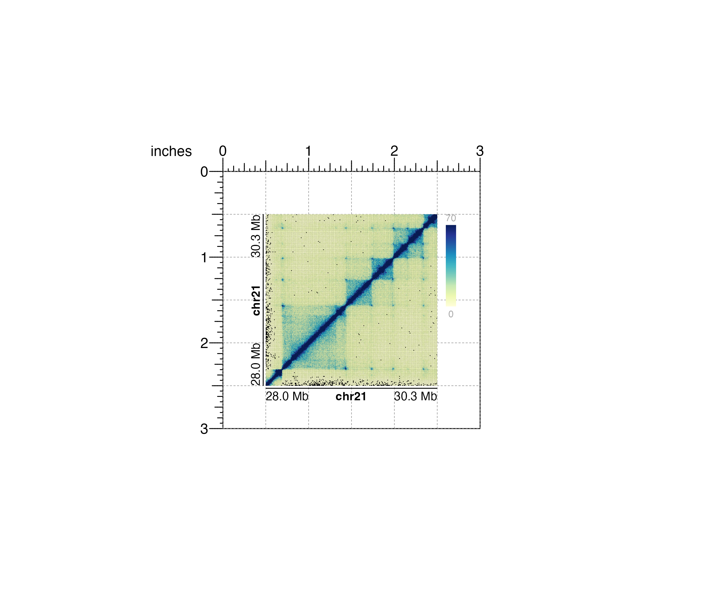

Plot a Hi-C interaction matrix in a square format
plotHicSquare( data, resolution = "auto", zrange = NULL, norm = "KR", matrix = "observed", chrom, chromstart = NULL, chromend = NULL, altchrom = NULL, altchromstart = NULL, altchromend = NULL, assembly = "hg38", palette = colorRampPalette(brewer.pal(n = 9, "YlGnBu")), colorTrans = "linear", half = "both", x = NULL, y = NULL, width = NULL, height = NULL, just = c("left", "top"), default.units = "inches", draw = TRUE, params = NULL, quiet = FALSE )
| data | Path to .hic file as a string or a 3-column dataframe of interaction counts in sparse upper triangular format. |
|---|---|
| resolution | A numeric specifying the width in basepairs of each pixel. For hic files, "auto" will attempt to choose a resolution based on the size of the region. For dataframes, "auto" will attempt to detect the resolution the dataframe contains. |
| zrange | A numeric vector of length 2 specifying the range of interaction scores to plot, where extreme values will be set to the max or min. |
| norm | Character value specifying hic data normalization method,
if giving .hic file. This value must be found in the .hic file.
Default value is |
| matrix | Character value indicating the type of matrix to output.
Default value is
|
| chrom | Chromosome of region to be plotted, as a string. |
| chromstart | Integer start position on chromosome to be plotted. |
| chromend | Integer end position on chromosome to be plotted. |
| altchrom | Alternate chromosome for off-diagonal plotting or interchromosomal plotting, as a string. |
| altchromstart | Alternate chromosome integer start position for off-diagonal plotting or interchromosomal plotting. |
| altchromend | Alternate chromosome integer end position for off-diagonal plotting or interchromosomal plotting. |
| assembly | Default genome assembly as a string or a
assembly object.
Default value is |
| palette | A function describing the color palette to use for
representing scale of interaction scores.
Default value is
|
| colorTrans | A string specifying how to scale Hi-C colors.
Options are "linear", "log", "log2", or "log10".
Default value is |
| half | A character value indicating which diagonal regions to plot.
For intrachromosomal plotting, options are
|
| x | A numeric or unit object specifying square Hi-C plot x-location. |
| y | A numeric, unit object, or character containing a "b" combined with a numeric value specifying square Hi-C plot y-location. The character value will place the square Hi-C plot y relative to the bottom of the most recently plotted plot according to the units of the plotgardener page. |
| width | A numeric or unit object specifying square Hi-C plot width. |
| height | A numeric or unit object specifying square Hi-C plot height. |
| just | Justification of square Hi-C plot relative to
its (x, y) location. If there are two values, the first value specifies
horizontal justification and the second value specifies vertical
justification.
Possible string values are: |
| default.units | A string indicating the default units to use if
|
| draw | A logical value indicating whether graphics output should be
produced. Default value is |
| params | An optional pgParams object containing relevant function parameters. |
| quiet | A logical indicating whether or not to print messages. |
Returns a hicSquare object containing relevant
genomic region, Hi-C data, placement, and grob information.
A square Hi-C plot can be placed on a plotgardener coordinate page by providing plot placement parameters:
plotHicSquare(data, chrom, chromstart = NULL, chromend = NULL, x, y, width, height, just = c("left", "top"), default.units = "inches")
This function can be used to quickly plot an unannotated square Hi-C plot by ignoring plot placement parameters:
plotHicSquare(data, chrom, chromstart = NULL, chromend = NULL)
## Load Hi-C data library(plotgardenerData) data("IMR90_HiC_10kb") ## Create a page pageCreate(width = 3, height = 3, default.units = "inches")## Plot and place Hi-C plot hicPlot <- plotHicSquare( data = IMR90_HiC_10kb, resolution = 10000, zrange = c(0, 70), chrom = "chr21", chromstart = 28000000, chromend = 30300000, assembly = "hg19", x = 0.5, y = 0.5, width = 2, height = 2, just = c("left", "top"), default.units = "inches" )#>#>## Annotate heatmap legend annoHeatmapLegend( plot = hicPlot, x = 2.6, y = 0.5, width = 0.12, height = 1.2, just = c("left", "top"), default.units = "inches" )#>## Annotate x-axis and y-axis genome labels annoGenomeLabel( plot = hicPlot, scale = "Mb", axis = "x", x = 0.5, y = 2.53, just = c("left", "top") )#>annoGenomeLabel( plot = hicPlot, scale = "Mb", axis = "y", x = 0.47, y = 0.5, just = c("right", "top") )#>